अध्याय 12: कांग्रेस प्रणाली: चुनौतियाँ और पुनर्स्थापना
(Challenges to & Restoration of Congress)
भाग 1: नेहरू के बाद उत्तराधिकार की चुनौती (Succession Crisis)
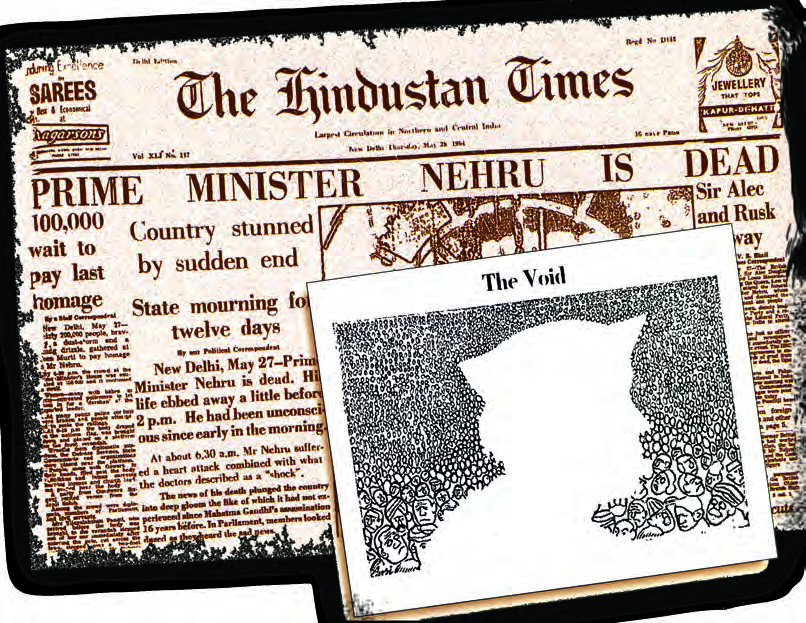
विवरण: 27 मई 1964 को भारत के पहले प्रधानमंत्री जवाहरलाल नेहरू के निधन की खबर देने वाला 'द हिंदुस्तान टाइम्स' का मुख्य पृष्ठ। साथ में दिया गया रेखाचित्र 'The Void' (शून्यता) देश के राजनीतिक परिदृश्य में उनके निधन से उत्पन्न खालीपन को दर्शाता है।
बोर्ड परीक्षा विशेष प्रश्नोत्तर (CBSE Board Q&A):
• प्रश्न 1: जवाहरलाल नेहरू के निधन से भारतीय राजनीति में उत्पन्न खालीपन को किस नाम से जाना गया और क्यों?
• उत्तर: इसे **'उत्तराधिकार का संकट' (Crisis of Succession)** कहा गया। नेहरू स्वतंत्रता आंदोलन के नायक और देश के निर्विवाद नेता थे। उनके निधन से उत्पन्न शून्यता के कारण देश-विदेश में यह आशंका थी कि नेहरू के बिना भारतीय लोकतंत्र असफल हो जाएगा।
• प्रश्न 2: 1960 के दशक को भारतीय इतिहास में 'खतरनाक दशक' (Dangerous Decade) क्यों कहा जाता है?
• उत्तर: क्योंकि इस दशक में खाद्यान्न संकट, आर्थिक मंदी, चीन (1962) और पाकिस्तान (1965) के साथ युद्ध जैसी गंभीर समस्याओं के साथ-साथ दो महान प्रधानमंत्रियों (नेहरू और शास्त्री) का आकस्मिक निधन हुआ, जिससे राजनीतिक अस्थिरता का खतरा पैदा हो गया था।
मई 1964 में जवाहरलाल नेहरू के निधन के बाद पूरे देश में एक ही सवाल था—"नेहरू के बाद कौन?" इस सवाल के पीछे एक और अधिक गंभीर सवाल था कि क्या भारत में नेहरू की मृत्यु के बाद लोकतंत्र जीवित रहेगा या नहीं। कई पश्चिमी विचारकों और अंतरराष्ट्रीय समाचार पत्रों का मानना था कि नेहरू की अनुपस्थिति में देश का विभाजन हो सकता है या सेना शासन संभाल सकती है। नेहरू के बाद उत्तराधिकार की यह चुनौती बेहद कठिन थी क्योंकि नेहरू का राजनीतिक कद और उनका जनसमर्थन असाधारण था। दुनिया को डर था कि भारत का लोकतंत्र नेहरू के बिना बिखर जाएगा।
लाल बहादुर शास्त्री (1964-1966): नेहरू के बाद कांग्रेस ने सर्वसम्मति से शास्त्रीजी को देश का दूसरा प्रधानमंत्री चुना। उनके कार्यकाल के दौरान ये मुख्य बिंदु महत्वपूर्ण हैं:
- 1. दोहरी चुनौतियाँ: उनके सामने दो बड़ी चुनौतियाँ थीं—गंभीर अनाज संकट और 1965 का भारत-पाक युद्ध।
- 2. जय जवान जय किसान: उन्होंने देश के जवानों और किसानों का मनोबल बढ़ाने के लिए यह अमर नारा दिया।
- 3. ताशकंद समझौता: 1965 युद्ध को समाप्त करने के लिए 10 जनवरी 1966 को ताशकंद (रूस) में समझौता हुआ, जहाँ शास्त्रीजी का अचानक निधन हो गया।
- 4. इंदिरा गांधी का आगमन: शास्त्रीजी के बाद प्रधानमंत्री पद के लिए इंदिरा गांधी और मोरारजी देसाई के बीच कड़ा मुकाबला हुआ।
- 5. पार्टी गुप्त मतदान: कांग्रेस के सांसदों के बीच गुप्त मतदान हुआ, जिसमें इंदिरा गांधी दो-तिहाई बहुमत से जीत गईं।
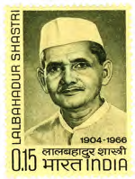
लाल बहादुर शास्त्री (1904 - 1966)
• परिचय: स्वतंत्र भारत के दूसरे प्रधानमंत्री (1964-1966)। वे 1930 से स्वतंत्रता आंदोलन में सक्रिय रहे।
• नैतिक मूल्य और शुचिता: उत्तर प्रदेश सरकार में मंत्री और बाद में केंद्रीय मंत्रिमंडल में रेल मंत्री रहे। एक बड़ी **रेलवे दुर्घटना की नैतिक जिम्मेदारी** लेते हुए उन्होंने मंत्री पद से इस्तीफा दे दिया था, जो सार्वजनिक जीवन में उनकी उच्च नैतिकता का प्रतीक है।
• अमर नारा: देश में खाद्यान्न संकट और पाकिस्तान आक्रमण के समय जवानों व किसानों का मनोबल बढ़ाने के लिए उन्होंने प्रसिद्ध **'जय जवान, जय किसान'** का नारा दिया।
• अंतिम समझौता: 1965 के भारत-पाक युद्ध के बाद शांति वार्ता के लिए **ताशकंद (तत्कालीन सोवियत संघ)** गए, जहाँ 10 जनवरी 1966 को ताशकंद समझौते पर हस्ताक्षर करने के बाद उनका अचानक निधन हो गया।
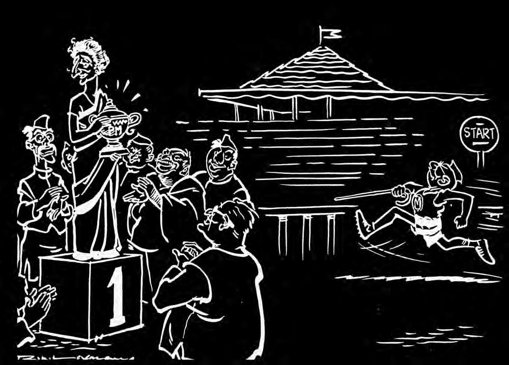
विवरण: इस व्यंग्यात्मक कार्टून में नेहरू के निधन के बाद प्रधानमंत्री पद के दावेदारों (शास्त्री, मोरारजी देसाई, जगजिवन राम आदि) को एक रेस ट्रैक पर दौड़ते दिखाया गया है, जो उत्तराधिकार के संघर्ष को दर्शाता है।
बोर्ड परीक्षा विशेष कार्टून आधारित प्रश्नोत्तर (CBSE Board Q&A):
• प्रश्न 1: 1964 में नेहरू की मृत्यु के बाद उत्तराधिकार के प्रश्न को विश्व स्तर पर किस रूप में देखा जा रहा था?
• उत्तर: विश्व के कई विश्लेषकों को संदेह था कि नेहरू के बिना भारत का लोकतांत्रिक ढांचा बिखर जाएगा और देश में सेना का शासन लागू हो सकता है। इसे 'खतरनाक दशक' (Dangerous Decade) के रूप में देखा गया।
• प्रश्न 2: इस रेस में अंततः किसकी विजय हुई और उसका क्या आधार था?
• उत्तर: इस दौड़ में अंततः **लाल बहादुर शास्त्री** की विजय हुई। उन्हें कांग्रेस पार्टी के अध्यक्ष के. कामराज और सांसदों द्वारा उनकी सादगी, विवादहीन छवि और नेहरू के साथ लंबे कूटनीतिक अनुभव के कारण सर्वसम्मति से चुना गया।

विवरण: लाल बहादुर शास्त्री के प्रधानमंत्री काल के दौरान वरिष्ठ सहयोगी के रूप में बैठक में भाग लेतीं इंदिरा गांधी। यह चित्र नेहरू के बाद भारत में नेतृत्व परिवर्तन और राजनीतिक संक्रमण को दर्शाता है।
बोर्ड परीक्षा विशेष प्रश्नोत्तर (CBSE Board Q&A):
• प्रश्न 1: लाल बहादुर शास्त्री के प्रधानमंत्री बनने के समय देश के सामने कौन सी दो बड़ी चुनौतियाँ थीं?
• उत्तर: (1) 1960 के दशक का मानसून संकट जिसके कारण देश में भीषण खाद्यान्न संकट (अकाल) पैदा हुआ। (2) 1965 में पाकिस्तान द्वारा भारत पर थोपा गया सैन्य आक्रमण।
• प्रश्न 2: शास्त्रीजी के बाद प्रधानमंत्री पद के चुनाव में किन दो नेताओं के बीच कड़ा मुकाबला हुआ था?
• उत्तर: शास्त्रीजी के बाद मोरारजी देसाई (अनुभवी नेता व बंबई प्रांत के पूर्व मुख्यमंत्री) और इंदिरा गांधी (सूचना एवं प्रसारण मंत्री) के बीच मुकाबला हुआ, जिसमें गुप्त मतदान द्वारा इंदिरा गांधी को चुना गया।
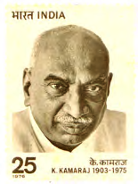
के. कामराज (1903 - 1976)
• परिचय: स्वतंत्रता सेनानी, कांग्रेस के दिग्गज नेता और **मद्रास (तमिलनाडु) के पूर्व मुख्यमंत्री**।
• किंगमेकर की भूमिका: कांग्रेस अध्यक्ष रहते हुए इन्होंने नेहरू के बाद शास्त्रीजी को और शास्त्रीजी के बाद इंदिरा गांधी को सर्वसम्मति से प्रधानमंत्री बनाने में केंद्रीय भूमिका निभाई।
• जनकल्याणकारी योजना: मद्रास राज्य के स्कूलों में प्राथमिक शिक्षा को बढ़ावा देने के लिए प्रसिद्ध **'मिड-डे मील स्कीम' (दोपहर के भोजन की योजना)** के वास्तविक प्रणेता।
• कामराज योजना (Kamraj Plan): 1963 में इन्होंने प्रस्ताव दिया था कि कांग्रेस के सभी वरिष्ठ नेताओं को सरकार के पदों से इस्तीफा देकर संगठन के काम में लग जाना चाहिए।
भाग 2: 1967 के चुनाव और 'राजनैतिक भूकंप' (Political Earthquake)
1967 का चौथा आम चुनाव स्वतंत्र भारत के इतिहास में एक मील का पत्थर था। इस चुनाव से पहले देश दो बड़े युद्धों (1962 चीन युद्ध और 1965 पाकिस्तान युद्ध), गंभीर मानसून विफलता, लगातार अकाल और खाद्य संकट से जूझ रहा था। जनता में कांग्रेस सरकार के खिलाफ गहरा जनाक्रोश था, जिसका विपक्षी दलों ने भरपूर फायदा उठाया। इस चुनाव ने पहली बार भारत में कांग्रेस के एकछत्र वर्चस्व को केंद्र और राज्यों दोनों स्तरों पर तोड़ दिया और राजनैतिक बहुलवाद (Political Pluralism) की शुरुआत की।, जिसने कांग्रेस के एकछत्र वर्चस्व को पहली बार बड़ी चुनौती दी।
1967 के चुनावों के 5 प्रमुख कारण और परिणाम:
- 1. आर्थिक संकट और जनाक्रोश: लगातार सूखे, विदेशी मुद्रा भंडार में कमी और रुपए के अवमूल्यन के कारण महंगाई बहुत बढ़ गई थी, जिससे जनता में सरकार के खिलाफ व्यापक रोष था।
- 2. गैर-कांग्रेसवाद (Non-Congressism): राम मनोहर लोहिया ने नारा दिया कि विपक्षी दल बंटे होने के कारण कांग्रेस जीतती है, इसलिए कांग्रेस विरोधी मतों को एक करने के लिए गठबंधन जरूरी है।
- 3. कांग्रेस को भारी चुनावी नुकसान: कांग्रेस किसी तरह केंद्र में बहुमत तो पा गई, लेकिन उसे अब तक की सबसे कम सीटें मिलीं।
- 4. 9 राज्यों में कांग्रेस का सफाया: देश के 9 राज्यों (जैसे उत्तर प्रदेश, बिहार, पंजाब, पश्चिम बंगाल आदि) में कांग्रेस बहुमत खो बैठी और वहाँ गैर-कांग्रेसी गठबंधन सरकारें (SVD) बनीं।
- 5. दलबदल (Defection) और अस्थिरता: विधायकों द्वारा अपनी पार्टी बदलने की प्रक्रिया तेज़ हुई, जिससे हरियाणा के विधायक गया लाल के नाम पर प्रसिद्ध जुमला "आया राम, गया राम" शुरू हुआ।
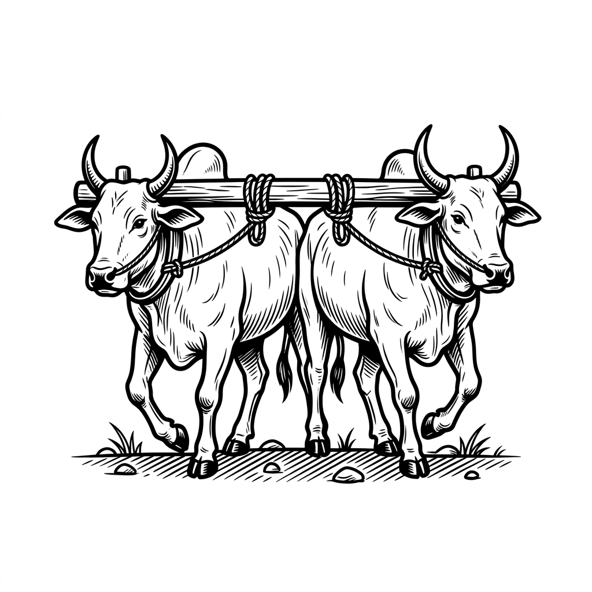
विवरण: 1952 से 1969 तक भारतीय राष्ट्रीय कांग्रेस (INC) का आधिकारिक चुनाव चिह्न "दो बैलों की जोड़ी" था, जो भारत की ग्रामीण और कृषि प्रधान अर्थव्यवस्था में पार्टी की गहरी पैठ को दर्शाता था।
बोर्ड परीक्षा विशेष प्रश्नोत्तर (CBSE Board Q&A):
• प्रश्न 1: यह चुनाव चिह्न किस कालखंड में कांग्रेस की पहचान रहा और 1969 में इसका क्या हुआ?
• उत्तर: यह चिह्न प्रथम तीन आम चुनावों (1952, 1957, 1962) और 1967 के चौथे आम चुनाव में कांग्रेस का प्रतीक था। 1969 के पार्टी विभाजन के बाद, चुनाव आयोग ने इस सिंबल को फ्रीज कर दिया। बाद में इंदिरा की कांग्रेस (R) को 'गाय और बछड़ा' तथा पुरानी कांग्रेस (O) को 'चरखा कातता हुआ व्यक्ति' मिला।

विवरण: यह नक्शा/कार्टून 1967 के चुनावों के बाद भारत के राजनीतिक परिदृश्य को दिखाता है, जिसमें उत्तर में पंजाब से लेकर पूर्व में पश्चिम बंगाल तक कांग्रेस मुक्त गठबंधन सरकारों का उदय हुआ था।
बोर्ड परीक्षा विशेष प्रश्नोत्तर (CBSE Board Q&A):
• प्रश्न 1: 1967 के चुनाव परिणामों को 'राजनैतिक भूकंप' की संज्ञा क्यों दी जाती है?
• उत्तर: क्योंकि आजादी के बाद पहली बार कांग्रेस को न केवल केंद्र में भारी सीटों का नुकसान हुआ, बल्कि उसने 9 राज्यों (पंजाब, हरियाणा, यूपी, बिहार, मध्य प्रदेश, मद्रास, उड़ीसा, पश्चिम बंगाल और केरल) में अपनी सरकार खो दी।
• प्रश्न 2: भारतीय राजनीति में 'दलबदल' (Defection) से क्या अभिप्राय है?
• उत्तर: जब कोई निर्वाचित जनप्रतिनिधि (सांसद या विधायक) उस राजनैतिक दल को छोड़ देता है जिसके चुनाव चिह्न पर वह चुनकर आया हो, और किसी अन्य दल में शामिल हो जाता है, तो उसे दलबदल कहते हैं।
🤝 गठबंधन का उदय (Rise of Coalitions)
1967 के चुनावों ने भारतीय राजनीति में 'गठबंधन' (Coalition) के एक नए युग की शुरुआत की। चूंकि कांग्रेस को कई राज्यों में बहुमत नहीं मिला, इसलिए विभिन्न गैर-कांग्रेसी दलों ने मिलकर संयुक्त विधायक दल (संवित - Samyukt Vidhayak Dal) का गठन किया और गैर-कांग्रेसी सरकारें बनाईं। इन सरकारों को 'संवित सरकारें' कहा गया। अधिकांश मामलों में ये दल वैचारिक रूप से एक-दूसरे से बिल्कुल भिन्न थे (जैसे बिहार में कम्युनिस्ट और जनसंघ दोनों एक ही गठबंधन सरकार का हिस्सा थे)।
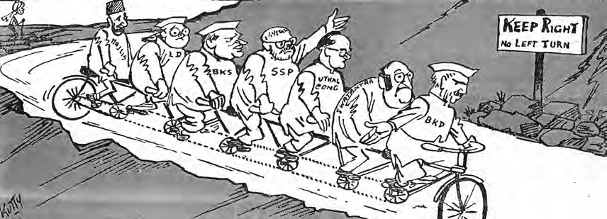
विवरण: कार्टूनिस्ट कुट्टी द्वारा बनाया गया यह रेखाचित्र 1974 में चौधरी चरण सिंह द्वारा गैर-वामपंथी दलों को मिलाकर एक 'संयुक्त मोर्चा' (United Front) बनाने के प्रयास को दर्शाता है। यह दिखाता है कि कैसे वैचारिक रूप से भिन्न दल एक पहिए वाले बहु-पहिया वाहन पर संतुलन बनाने की कोशिश कर रहे हैं जिसपर "KEEP RIGHT: NO LEFT TURN" (दाएं रहें: बाएं मुड़ना मना है) का बोर्ड लगा है।
बोर्ड परीक्षा विशेष कार्टून आधारित प्रश्नोत्तर (CBSE Board Q&A):
• प्रश्न 1: 1967 के चुनावों के बाद राज्यों में बनी 'संवित' (SVD) सरकारों की मुख्य विशेषता क्या थी?
• उत्तर: संवित (संयुक्त विधायक दल) सरकारों की मुख्य विशेषता यह थी कि इनमें शामिल दल वैचारिक रूप से अत्यंत विपरीत थे। उदाहरण के लिए, बिहार की संवित सरकार में वामपंथी (CPI) और दक्षिणपंथी (जनसंघ) दोनों विपरीत विचारधारा वाले दल शामिल थे, जिनका एकमात्र उद्देश्य कांग्रेस को सत्ता से बाहर रखना था।
• प्रश्न 2: कार्टून में दिए गए बोर्ड "KEEP RIGHT - NO LEFT TURN" का क्या राजनैतिक निहितार्थ है?
• उत्तर: इसका अर्थ है कि चौधरी चरण सिंह द्वारा बनाया गया यह मोर्चा **गैर-कम्युनिस्ट/गैर-वामपंथी (Non-Communist)** दलों का गठबंधन था। वे दक्षिणपंथी और मध्यमार्गी विचारधारा (Right and Center) की ओर झुके हुए थे और कम्युनिस्टों (वामपंथ) को इससे बाहर रखा गया था।
विवरण: कार्टून में दिखाया गया है कि कैसे राज्य स्तर के नेता केंद्र में 'किंगमेकर' (सरकार बनाने वाले) की भूमिका निभा रहे हैं। यह 1967 के बाद के गठबंधन युग और राज्यों के बढ़ते राजनैतिक महत्व को दर्शाता है।
बोर्ड परीक्षा विशेष प्रश्नोत्तर (CBSE Board Q&A):
• प्रश्न: 1960 और 1970 के दशक में राज्य स्तर के नेताओं का केंद्र सरकार के गठन में क्या प्रभाव था?
• उत्तर: इस दौर में कांग्रेस के भीतर 'सिंडिकेट' के नेता (जैसे तमिलनाडु के के. कामराज, मैसूर के निजलिंगप्पा) राज्यों के शक्तिशाली नेता थे, जिन्होंने शास्त्रीजी और इंदिरा गांधी दोनों को प्रधानमंत्री बनाने में केंद्रीय भूमिका निभाई। 1967 के बाद राज्यों में बनी गठबंधन सरकारों ने भी इस प्रभाव को बढ़ाया।
🎭 ऐतिहासिक संदर्भ: 'आया राम, गया राम' की कहानी
नारे की उत्पत्ति और इतिहास:
भारतीय राजनीति में 'दलबदल' की प्रवृत्ति को दर्शाने वाला यह प्रसिद्ध जुमला **'आया राम, गया राम'** 1967 में हरियाणा के एक विधायक **गया लाल** के कारनामे से बना। गया लाल ने मात्र 15 दिनों के भीतर तीन बार अपनी पार्टी बदली! वे पहले कांग्रेस से यूनाइटेड फ्रंट में गए, फिर कांग्रेस में लौटे और 9 घंटे बाद दोबारा यूनाइटेड फ्रंट में चले गए। जब वे कांग्रेस में वापस आए, तो नेता राव बीरेंद्र सिंह ने चंडीगढ़ में प्रेस के सामने कहा था—"गया राम अब आया राम हैं।"
इस घटना के बाद भारतीय संविधान में दलबदल को रोकने के लिए **52वां संविधान संशोधन (1985)** किया गया और **10वीं अनुसूची** जोड़ी गई।
• प्रश्न 1: 'दलबदल' (Defection) से क्या अभिप्राय है?
• उत्तर: जब कोई जनप्रतिनिधि (सांसद या विधायक) किसी खास राजनीतिक दल के चुनाव चिह्न पर चुनाव जीतकर जीतने के बाद उस दल को छोड़कर किसी दूसरे दल में शामिल हो जाता है, तो उसे दलबदल कहा जाता है।
• प्रश्न 2: दलबदल रोकने के लिए भारतीय संविधान में क्या प्रयास किए गए हैं?
• उत्तर: दलबदल रोकने के लिए **1985 में 52वां संविधान संशोधन** पारित किया गया, जिसके तहत संविधान में **दसवीं अनुसूची (Tenth Schedule / Anti-Defection Law)** जोड़ी गई। इसके अनुसार यदि कोई सदस्य दलबदल करता है तो वह संसद या विधानसभा की सदस्यता खो देता है।
📖 केस स्टडी (Case Study): राजस्थान के एक गाँव में चुनाव (1967)
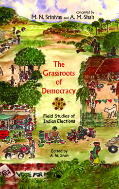
गाँव देवीसर (चोमू निर्वाचन क्षेत्र, राजस्थान) की कहानी:
यह कहानी 1967 के विधानसभा चुनावों के समय की है। गाँव में मुख्य मुकाबला **कांग्रेस** और **स्वतंत्र पार्टी** के बीच था। लेकिन गाँव के भीतर की स्थानीय राजनीति चाचा (शेर सिंह) और भतीजे (भीम सिंह) के व्यक्तिगत और गुटीय संघर्ष से प्रभावित थी।
• भीम सिंह (भतीजा): इन्होंने राजपूतों और गैर-राजपूतों का एक नया सामाजिक समीकरण बनाया। वे कांग्रेस के साथ जुड़े और तत्कालीन मुख्यमंत्री **मोहन लाल सुखाड़िया** से मिलकर अपने प्रभाव का इस्तेमाल किया। उनका उद्देश्य था कि यदि कांग्रेस उम्मीदवार जीतेगा तो उनका सीधा संपर्क सरकार के मंत्री से हो जाएगा।
• शेर सिंह (चाचा): पारंपरिक रूप से गाँव की राजनीति पर इनका दबदबा था। कांग्रेस विरोधी रुख के कारण इन्होंने स्वतंत्र पार्टी के उम्मीदवार (जो एक जागीरदार थे) का समर्थन किया, और जनता से वादा किया कि जागीरदार गाँव में स्कूल का निर्माण करवाएंगे।
• प्रश्न 1: इस केस स्टडी से भारत में स्थानीय स्तर पर चुनावी राजनीति और जातिगत समीकरणों के संबंधों का क्या पता चलता है?
• उत्तर: यह दर्शाता है कि भारत में राष्ट्रीय/राज्य स्तर की पार्टियों का मुकाबला स्थानीय स्तर पर जातिगत समीकरणों और गुटीय संघर्षों (जैसे राजपूत और गैर-राजपूत गठबंधन) से जुड़ जाता है। मतदाता केवल पार्टी नहीं, बल्कि स्थानीय संबंधों और अपने काम करवाने के माध्यम (जैसे मंत्री से संपर्क) को देखकर वोट करते हैं।
• प्रश्न 2: 1967 के चुनाव में 'स्वतंत्र पार्टी' की स्थिति ग्रामीण क्षेत्रों में कैसी थी?
• उत्तर: स्वतंत्र पार्टी को ग्रामीण क्षेत्रों के पूर्व राजा-महाराजाओं और जागीरदारों (जमींदारों) का समर्थन प्राप्त था। वे अपने व्यक्तिगत प्रभाव और सामाजिक-आर्थिक संसाधनों (जैसे स्कूल निर्माण के वादे) के बल पर कांग्रेस को चुनौती दे रहे थे।
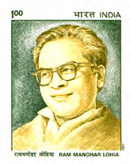
डॉ. राम मनोहर लोहिया (1910 - 1967)
• परिचय: भारत के प्रमुख समाजवादी विचारक, स्वतंत्रता सेनानी और प्रखर राजनेता।
• सिद्धांत: इन्होंने **'गैर-कांग्रेसवाद'** (Non-Congressism) का सैद्धांतिक आधार तैयार किया। इनका मानना था कि कांग्रेस का शासन अलोकतांत्रिक और गरीब-विरोधी है।
• समाजवाद: चौखंभा राज्य, सामाजिक न्याय और पिछड़ों को सत्ता में 60% आरक्षण देने की वकालत करने वाले पहले विचारक।
• संसद में प्रभाव: नेहरू सरकार की नीतियों (विशेषकर नेहरू की विदेश नीति) के संसद में सबसे तीखे आलोचक।
सी. नटराजन अन्नादुरै (1909 - 1969)
• परिचय: मद्रास (तमिलनाडु) के पूर्व मुख्यमंत्री (1967-1969)। वे एक प्रसिद्ध लेखक, पत्रकार और प्रभावशाली वक्ता थे।
• द्रविड़ आंदोलन: शुरुआत में वे पेरियार (ई.वी. रामासामी नायकर) के नेतृत्व वाले 'द्रविड़ कड़गम' (DK) से जुड़े थे, लेकिन 1949 में वैचारिक मतभेदों के कारण उन्होंने **'द्रविड़ मुनेत्र कड़गम' (DMK)** की स्थापना की।
• हिंदी विरोधी आंदोलन (1965): उन्होंने 1965 में मद्रास में हुए हिंदी-विरोधी आंदोलन का प्रखर नेतृत्व किया और केंद्र सरकार द्वारा राज्यों पर हिंदी थोपने की नीति का पुरजोर विरोध किया। वे राज्यों की अधिक स्वायत्तता (Federal Autonomy) के कट्टर समर्थक थे।
• ऐतिहासिक विजय: 1967 के आम चुनाव में उनकी पार्टी DMK ने मद्रास में भारी बहुमत प्राप्त किया। वे भारत के पहले गैर-कांग्रेसी मुख्यमंत्री थे जिन्होंने अपने बल पर पूर्ण बहुमत की सरकार बनाई थी।
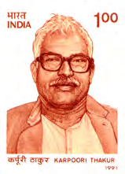
कर्पूरी ठाकुर (1924 - 1988)
• परिचय: स्वतंत्रता सेनानी, प्रमुख समाजवादी नेता और बिहार के दो बार मुख्यमंत्री (दिसंबर 1970-जून 1971 और जून 1977-अप्रैल 1979)। उन्हें लोकप्रिय रूप से **'जननायक'** कहा जाता है।
• सामाजिक न्याय और आरक्षण: वे लोहिया और जयप्रकाश नारायण के अनन्य सहयोगी थे। बिहार में **पिछड़े वर्गों के लिए सरकारी नौकरियों में आरक्षण (मुंगेरी लाल आयोग की सिफारिशों के आधार पर)** लागू करने में उन्होंने क्रांतिकारी भूमिका निभाई, जिसे 'कर्पूरी ठाकुर फॉर्मूला' भी कहा जाता है।
• जन सरोकार: वे सादगी, ईमानदारी और अंग्रेजी भाषा की अनिवार्यता को समाप्त करने के समर्थक के रूप में जाने जाते थे। वर्ष 2024 में उन्हें मरणोपरांत भारत के सर्वोच्च नागरिक सम्मान **'भारत रत्न'** से सम्मानित किया गया।
भाग 3: कांग्रेस का ऐतिहासिक विभाजन (The Great Split - 1969)
👥 ऐतिहासिक संदर्भ: कांग्रेस 'सिंडिकेट' (The Congress Syndicate)
सिंडिकेट क्या था?
कांग्रेस संगठन के भीतर **प्रभावशाली और ताकतवर नेताओं के अनौपचारिक समूह** को 'सिंडिकेट' कहा जाता था। इस समूह का पार्टी के सांगठनिक ढांचे पर पूरा नियंत्रण था। इसके मुख्य नेताओं में के. कामराज (मद्रास के पूर्व मुख्यमंत्री), एस.के. पाटिल (बंबई के नेता), एस. निजलिंगप्पा (मैसूर के नेता), एन. संजीव रेड्डी (आंध्र प्रदेश के नेता) और अतुल्य घोष (पश्चिम बंगाल) शामिल थे।
लाल बहादुर शास्त्री और शुरुआत में इंदिरा गांधी दोनों को प्रधानमंत्री बनाने में इस सिंडिकेट की निर्णायक भूमिका थी। सिंडिकेट के नेताओं को उम्मीद थी कि इंदिरा गांधी उनके दिशा-निर्देशों पर चलेंगी, लेकिन इंदिरा गांधी ने धीरे-धीरे सिंडिकेट को दरकिनार करना शुरू कर दिया जिससे 1969 में कांग्रेस का विभाजन हो गया।
• प्रश्न 1: 1960 के दशक में कांग्रेस के संदर्भ में 'सिंडिकेट' शब्द से क्या तात्पर्य है? इसके किन्हीं दो नेताओं के नाम लिखिए।
• उत्तर: 'सिंडिकेट' कांग्रेस के भीतर वरिष्ठ, प्रभावशाली और ताकतवर नेताओं का एक अनौपचारिक समूह था जिसका संगठन पर नियंत्रण था। इसके दो प्रमुख नेता **के. कामराज** और **एस. निजलिंगप्पा** थे।
• प्रश्न 2: इंदिरा गांधी और सिंडिकेट के बीच टकराव के मुख्य कारण क्या थे?
• उत्तर: मुख्य कारण यह था कि इंदिरा गांधी ने प्रधानमंत्री बनने के बाद सिंडिकेट के नेताओं पर निर्भर रहने के बजाय अपने सलाहकारों के एक अलग समूह (किचन कैबिनेट) का गठन किया और नीतियों (जैसे बैंकों का राष्ट्रीयकरण, प्रिवी पर्स की समाप्ति) को वामपंथी झुकाव देकर अपनी स्वतंत्र छवि बनाना शुरू किया।
एस. निजलिंगप्पा (1902 - 2000)
• परिचय: स्वतंत्रता सेनानी, संविधान सभा के सदस्य, और मैसूर (कर्नाटक) प्रांत के पूर्व मुख्यमंत्री। उन्हें **'आधुनिक कर्नाटक का निर्माता'** माना जाता है।
• संगठन में भूमिका: 1968 से 1971 के दौरान वे कांग्रेस पार्टी के अध्यक्ष रहे। वे कांग्रेस के भीतर 'सिंडिकेट' समूह के सबसे प्रभावशाली नेताओं में से एक थे।
• ऐतिहासिक टकराव: 1969 के राष्ट्रपति चुनाव में उन्होंने इंदिरा गांधी के वामपंथी रुख का खुलकर विरोध किया और अंततः अनुशासनहीनता के आरोप में इंदिरा गांधी को कांग्रेस से निष्कासित कर दिया, जिससे कांग्रेस आधिकारिक तौर पर कांग्रेस (O) और कांग्रेस (R) में विभाजित हो गई।
1969 में कांग्रेस के भीतर का आंतरिक सांगठनिक तनाव चरम पर पहुँच गया। नेहरू के बाद इंदिरा गांधी को प्रधानमंत्री बनाने वाली सिंडिकेट चाहती थी कि इंदिरा उनकी सलाह से काम करें। किंतु इंदिरा ने अपनी स्वतंत्र राजनैतिक जमीन तलाशनी शुरू कर दी और सिंडिकेट को कड़ा संदेश देते हुए उप-प्रधानमंत्री मोरारजी देसाई की असहमति के बावजूद 14 बैंकों के राष्ट्रीयकरण जैसे वामपंथी नीतिगत फैसलों को आगे बढ़ाया। यह व्यक्तिगत वर्चस्व और समाजवादी बनाम दक्षिणपंथी नीतियों की वैचारिक जंग बन गई।, जिसके परिणामस्वरूप पार्टी दो विरोधी गुटों में विभाजित हो गई।
विभाजन की ओर ले जाने वाले 5 प्रमुख घटनाक्रम:
- 1. सिंडिकेट बनाम इंदिरा गांधी संघर्ष: इंदिरा गांधी ने पार्टी संगठन के पुराने नेताओं (सिंडिकेट) के नियंत्रण से बाहर निकलकर सरकार पर अपनी स्वतंत्र पकड़ बनानी शुरू की।
- 2. समाजवादी नीतियां: इंदिरा ने सिंडिकेट की असहमति के बावजूद बैंकों के राष्ट्रीयकरण और प्रिवी पर्स की समाप्ति जैसे प्रगतिशील कदम उठाए।
- 3. राष्ट्रपति पद का चुनाव (1969): जाकिर हुसैन के निधन के बाद सिंडिकेट ने एन. संजीव रेड्डी को कांग्रेस का आधिकारिक उम्मीदवार बनाया, जबकि इंदिरा ने स्वतंत्र उम्मीदवार वी. वी. गिरि का समर्थन किया।
- 4. 'अन्तरात्मा की आवाज़' की अपील: इंदिरा गांधी ने कांग्रेस सांसदों और विधायकों से पार्टी व्हिप के बजाय अपनी अंतरात्मा की आवाज पर वी. वी. गिरि को वोट देने की अपील की।
- 5. औपचारिक विभाजन (O बनाम R): वी. वी. गिरि की जीत के बाद कांग्रेस दो फाड़ हो गई—सिंडिकेट के नियंत्रण वाली कांग्रेस (O - पुरानी कांग्रेस) और इंदिरा के नेतृत्व वाली कांग्रेस (R - नई कांग्रेस)।
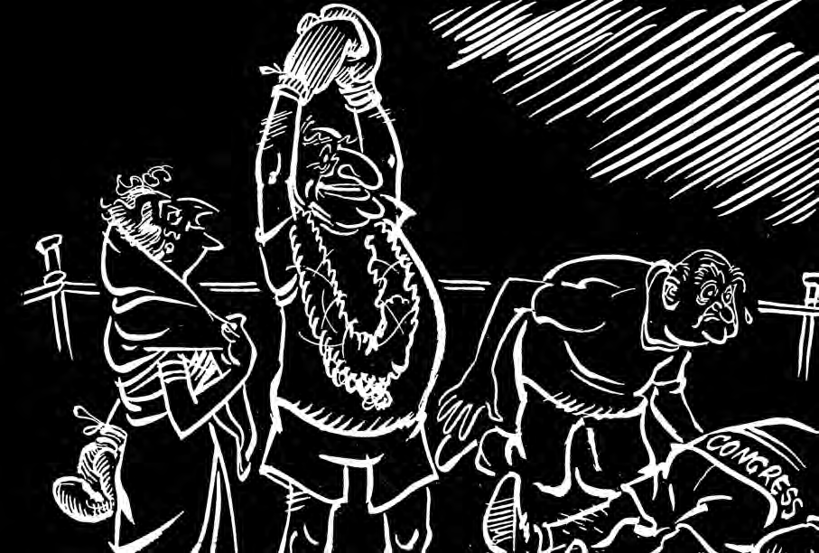
विवरण: इस व्यंग्यात्मक कार्टून में इंदिरा गांधी और सिंडिकेट के नेताओं (कामराज, निजलिंगप्पा) को एक रस्सी के साथ खींचातानी करते दिखाया गया है, जो कांग्रेस की सत्ता और संगठन पर नियंत्रण के कड़े आंतरिक संघर्ष को दर्शाता है।
बोर्ड परीक्षा विशेष कार्टून आधारित प्रश्नोत्तर (CBSE Board Q&A):
• प्रश्न 1: यह रस्सी की खींचतान किस ऐतिहासिक विभाजन की ओर इशारा करती है?
• उत्तर: यह 1969 में कांग्रेस के दो विरोधी गुटों—Congress (O) और Congress (R)—के बीच हुए ऐतिहासिक विभाजन की ओर इशारा करती है।
• प्रश्न 2: सिंडिकेट के नेताओं का इंदिरा गांधी के प्रति क्या प्रारंभिक सोचना था जो बाद में गलत सिद्ध हुआ?
• उत्तर: सिंडिकेट के नेताओं को लगता था कि इंदिरा गांधी को राजनीति का कम अनुभव है, इसलिए वे उन पर निर्भर रहेंगी और उनकी सलाह पर काम करेंगी। परंतु इंदिरा ने बैंकों के राष्ट्रीयकरण जैसे साहसिक और स्वतंत्र फैसले लेकर सिंडिकेट को किनारे कर दिया।
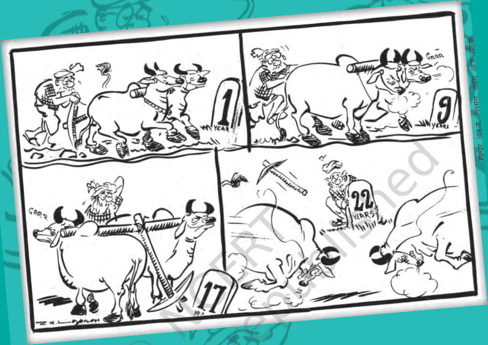
विवरण: 1969 के विभाजन के समय का कार्टून, जिसमें सिंडिकेट और इंदिरा गांधी दोनों गुटों को कांग्रेस के आधिकारिक दो बैलों वाले चुनाव चिह्न पर अपना-अपना दावा ठोकते दिखाया गया है।
बोर्ड परीक्षा विशेष प्रश्नोत्तर (CBSE Board Q&A):
• प्रश्न 1: विभाजन के बाद चुनाव चिह्न के लिए दोनों गुटों में क्या विवाद हुआ?
• उत्तर: दोनों गुटों (कांग्रेस-O और कांग्रेस-R) ने दावा किया कि वे ही असली कांग्रेस हैं और उन्हें ही "दो बैलों की जोड़ी" का मूल चिह्न मिलना चाहिए। चुनाव आयोग ने विवाद के कारण इस मूल चिह्न को जब्त (freeze) कर दिया।


विवरण: 1969 के कांग्रेस विभाजन के समय के कार्टून और सुर्खियां। (ऊपर) 'द हिंदुस्तान टाइम्स' की सुर्खी "PM INSISTS ON FREE VOTE: Congress splits on historic day" जो राष्ट्रपति चुनाव के समय इंदिरा के रुख को दिखाती है। (नीचे) विजयन द्वारा बनाया गया प्रसिद्ध कार्टून जिसमें इंदिरा गांधी और सिंडिकेट नेताओं को कांग्रेस को समाप्त करने (Bapu's wish was to see the Congress dissolved) का व्यंग्य करते दिखाया गया है।
बोर्ड परीक्षा विशेष प्रश्नोत्तर (CBSE Board Q&A):
• प्रश्न 1: 1969 के राष्ट्रपति चुनाव में इंदिरा गांधी के समर्थक और सिंडिकेट के उम्मीदवार कौन-कौन थे?
• उत्तर: सिंडिकेट के आधिकारिक कांग्रेस उम्मीदवार **नीलम संजीव रेड्डी** थे, जबकि इंदिरा गांधी समर्थित उम्मीदवार तत्कालीन उपराष्ट्रपति **वी. वी. गिरि** थे। वी. वी. गिरि ने स्वतंत्र उम्मीदवार के रूप में चुनाव जीता।
• प्रश्न 2: विभाजन के बाद बनी कांग्रेस के दोनों गुटों को किन तकनीकी नामों से जाना गया?
• उत्तर: (1) सिंडिकेट समर्थित पुरानी कांग्रेस को **Congress (O) - Organisation** कहा गया। (2) इंदिरा गांधी समर्थित नई कांग्रेस को **Congress (R) - Requisitionist** कहा गया।
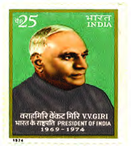
वराहगिरि वेंकट गिरि (1894 - 1980)
• उपाधि: भारत के चौथे राष्ट्रपति (1969 - 1974)।
• पृष्ठभूमि: प्रमुख श्रमिक संघ (Trade Union) नेता। श्रीलंका में भारत के उच्चायुक्त और कई राज्यों के राज्यपाल रहे।
• ऐतिहासिक घटना: 1969 के राष्ट्रपति चुनाव में स्वतंत्र उम्मीदवार के रूप में उतरे और इंदिरा गांधी के 'अन्तरात्मा की आवाज़' वाले ऐतिहासिक कूटनीतिक समर्थन से कांग्रेस के आधिकारिक उम्मीदवार एन. संजीव रेड्डी को पराजित किया।
• योगदान: श्रमिक कल्याण और सार्वजनिक जीवन में शुचिता के प्रबल पक्षधर। इन्हें 1975 में भारत रत्न से सम्मानित किया गया।
भाग 4: प्रिवी पर्स की समाप्ति और समाजवादी कदम (Socialist Reforms)
इंदिरा गांधी ने अपनी राजनैतिक पकड़ मजबूत करने के लिए खुद को गरीबों और भूमिहीनों के मसीहा के रूप में स्थापित करने हेतु कई कड़े आर्थिक फैसले लिए।
प्रिवी पर्स की समाप्ति और समाजवादी कदमों के 5 मुख्य आयाम:
- 1. प्रिवी पर्स (Privy Purse) क्या था: आजादी के समय रियासतों के भारत में विलय के बदले राजा-महाराजाओं को दी जाने वाली विशेष पेंशन और विशेषाधिकार।
- 2. समानता के सिद्धांत पर चोट: इंदिरा का तर्क था कि एक लोकतांत्रिक समाज में जन्म के आधार पर विशेष भत्ते और पेंशन देना समानता के मौलिक अधिकार के खिलाफ है।
- 3. 14 निजी बैंकों का राष्ट्रीयकरण (1969): बैंकों का पैसा कुछ अमीर घरानों की मुट्ठी से निकालकर किसानों और छोटे उद्योगों तक पहुँचाने के लिए 14 बैंकों को सरकारी घोषित किया गया।
- 4. 26वाँ संविधान संशोधन (1971): सुप्रीम कोर्ट द्वारा प्रिवी पर्स बंद करने के अध्यादेश को रद्द करने के बाद, इंदिरा ने 1971 की भारी जीत के बाद संविधान संशोधन कर इसे जड़ से खत्म कर दिया।
- 5. लोक-लुभावन छवि का निर्माण: इन नीतियों ने मोरारजी देसाई और सिंडिकेट को 'अमीर-समर्थक' और इंदिरा को 'गरीब-रक्षक' साबित करने में मुख्य भूमिका निभाई।
भाग 5: 1971 का आम चुनाव और 'गरीबी हटाओ' (Landslide Victory)
1971 का चुनाव भारत की संसदीय प्रणाली का एक अभूतपूर्व मुकाबला था। इंदिरा गांधी ने पार्टी विभाजन के बाद संसद में अपना पूर्ण बहुमत खो दिया था और वे कम्युनिस्ट पार्टी (CPI) के बाहरी समर्थन से सरकार चला रही थीं। उन्होंने लोकसभा को समय से पूर्व भंग करके नए जनादेश के लिए चुनाव मैदान में उतरने का साहसिक फैसला लिया। इस चुनाव में सारा विपक्ष एक तरफ खड़ा था, जिसे 'ग्रैंड अलायंस' कहा गया, और दूसरी तरफ इंदिरा गांधी अपने अकेले करिश्मे पर चुनावी समर में उतरी थीं।, जिसमें इंदिरा गांधी ने पूरे विपक्ष के मोर्चे (ग्रैंड अलायंस) को अकेले धूल चटा दी।
इंदिरा गांधी की 1971 की ऐतिहासिक जीत के 5 प्रमुख कारक:
- 1. गरीबी हटाओ (Garibi Hatao) का नारा: विपक्ष के पास केवल "इंदिरा हटाओ" का नारा था, जिसके मुकाबले इंदिरा ने "गरीबी हटाओ" का सकारात्मक, उम्मीद से भरा लोकप्रिय नारा दिया।
- 2. ग्रैंड अलायंस की कमजोरी: गैर-कांग्रेसी विपक्षी दलों के गठबंधन (Grand Alliance) के पास कोई साझा एजेंडा या वैकल्पिक नेतृत्व नहीं था।
- 3. वंचित वर्गों का मजबूत समर्थन: भूमिहीन मजदूरों, दलितों, आदिवासियों, अल्पसंख्यकों और महिलाओं ने इंदिरा गांधी की कांग्रेस को एकतरफा वोट दिया।
- 4. बांग्लादेश का उदय और 1971 का युद्ध: चुनाव के ठीक बाद भारत-पाक युद्ध में ऐतिहासिक जीत और बांग्लादेश के निर्माण से इंदिरा गांधी को पूरे देश में देवी 'दुर्गा' के रूप में देखा गया।
- 5. पार्टी पर पूर्ण नियंत्रण: 352 सीटों के साथ प्रचंड बहुमत पाकर इंदिरा ने यह साबित कर दिया कि असली कांग्रेस उनकी कांग्रेस (R) ही है।
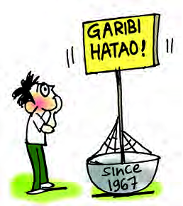
विवरण: आर.के. लक्ष्मण द्वारा बनाया गया यह कार्टून विपक्षी नेताओं (ग्रैंड अलायंस) को एक छोटी नाव में एक विशाल इंदिरा गांधी का मुकाबला करने का प्रयास करते दिखाता है, जो उस समय के एकतरफा शक्ति संतुलन को दर्शाता है।
बोर्ड परीक्षा विशेष कार्टून आधारित प्रश्नोत्तर (CBSE Board Q&A):
• प्रश्न 1: कार्टून में इंदिरा गांधी को इतना विशाल और विपक्षी नेताओं को इतना बौना क्यों दिखाया गया है?
• उत्तर: यह 1971 के चुनावों में इंदिरा गांधी की अपार जन-लोकप्रियता और उनके सशक्त राजनैतिक कद को दर्शाता है। उनके सामने विपक्ष का संगठन और जनाधार बहुत बिखरा हुआ और कमजोर था।
• प्रश्न 2: विपक्ष के पास इंदिरा गांधी के "गरीबी हटाओ" नारे का क्या मुकाबला था?
• उत्तर: विपक्ष के पास कोई वैकल्पिक आर्थिक एजेंडा या नीतिगत कार्यक्रम नहीं था; उनका एकमात्र साझा नारा **"इंदिरा हटाओ"** था, जिसे जनता ने स्वीकार नहीं किया।
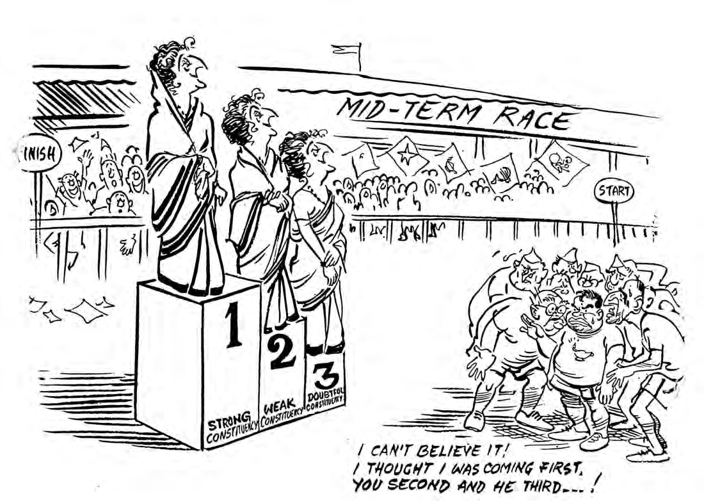
विवरण: आर.के. लक्ष्मण द्वारा बनाया गया यह व्यंग्यात्मक कार्टून 1971 के लोकसभा चुनावों के परिणामों की व्याख्या करता है। इसमें विजय पोडियम पर पहले, दूसरे और तीसरे तीनों स्थानों पर अकेले इंदिरा गांधी (मजबूत निर्वाचन क्षेत्र, कमजोर निर्वाचन क्षेत्र और संदेहास्पद निर्वाचन क्षेत्र) को खड़ा दिखाया गया है। नीचे जमीन पर विपक्षी नेता (जैसे मोरारजी देसाई, वाजपेयी, चरण सिंह) हक्के-बक्के खड़े होकर कह रहे हैं कि उन्हें विश्वास नहीं हो रहा कि वे पूरी तरह हार गए।
बोर्ड परीक्षा विशेष कार्टून आधारित प्रश्नोत्तर (CBSE Board Q&A):
• प्रश्न 1: इस कार्टून में पहले, दूसरे और तीसरे तीनों स्थानों पर केवल एक ही नेता (इंदिरा गांधी) को दिखाने का क्या संदेश है?
• उत्तर: यह दर्शाता है कि 1971 के चुनावों में इंदिरा गांधी की कांग्रेस (R) को देश के सभी क्षेत्रों (मजबूत, कमजोर और कठिन तीनों तरह की सीटों पर) में एकतरफा प्रचंड बहुमत हासिल हुआ था। उनके प्रभाव के सामने विपक्ष का नामोनिशान पूरी तरह समाप्त हो गया था।
• प्रश्न 2: 1971 के लोकसभा चुनावों में इंदिरा गांधी की भारी सफलता का मुख्य कारण क्या था?
• उत्तर: मुख्य कारण उनका लोक-लुभावन **"गरीबी हटाओ"** का नारा, वंचितों (भूमिहीनों, दलितों, महिलाओं, अल्पसंख्यकों) का मजबूत समर्थन, और उनका व्यक्तिगत करिश्माई नेतृत्व था।

विवरण: 1971 के ऐतिहासिक परिणामों के बाद देश में जश्न मनाते कांग्रेसी कार्यकर्ता और इंदिरा गांधी का विजयी पोस्टर। यह भारतीय राजनीति में इंदिरा गांधी के निर्विवाद वर्चस्व के आरंभ को दर्शाता है।
बोर्ड परीक्षा विशेष प्रश्नोत्तर (CBSE Board Q&A):
• प्रश्न 1: 1971 के आम चुनाव में विपक्ष के गठबंधन को किस नाम से जाना गया और उसमें कौन से दल शामिल थे?
• उत्तर: विपक्ष के इस मोर्चे को **"ग्रैंड अलायंस" (Grand Alliance)** कहा गया। इसमें सिंडिकेट की कांग्रेस (O), एसएसपी, पीएसपी, जनसंघ और स्वतंत्र पार्टी जैसे प्रमुख गैर-कांग्रेसी दल शामिल थे।
• प्रश्न 2: 1971 के आम चुनाव में कांग्रेस (R) और सीपीआई (CPI) गठबंधन को कुल कितनी सीटें मिली थीं?
• उत्तर: इस गठबंधन ने लोकसभा की कुल 518 सीटों में से **375 सीटें** जीती थीं, जिसमें से अकेले इंदिरा गांधी की कांग्रेस (R) ने **352 सीटें** और 48.4% मत प्राप्त किए थे।
भाग 6: कांग्रेस प्रणाली की पुनर्स्थापना और उसकी प्रकृति (Restoration of Congress)
1971 की जीत के बाद इंदिरा गांधी ने दावा किया कि उन्होंने नेहरू के दौर की कांग्रेस प्रणाली को पुनर्जीवित कर दिया है। लेकिन इस 'नई कांग्रेस' की प्रकृति पुरानी कांग्रेस से बहुत अलग थी।
पुरानी कांग्रेस और इंदिरा गांधी की नई कांग्रेस में 5 मुख्य अंतर:
- 1. सांगठनिक मजबूती बनाम नेता की लोकप्रियता: पुरानी कांग्रेस के पास हर राज्य और जिले में मजबूत संगठन था, जबकि नई कांग्रेस पूरी तरह से इंदिरा गांधी की व्यक्तिगत लोकप्रियता और करिश्मे पर टिकी थी।
- 2. सर्वसमावेशी छतरी बनाम वफादारी (Loyalty): पुरानी कांग्रेस विभिन्न विचारों (वाम, दक्षिण, मध्यमार्गी) को साथ लेकर चलती थी, जबकि नई कांग्रेस में नेतृत्व के प्रति वफादारी को सर्वोपरि माना गया।
- 3. आंतरिक लोकतंत्र का अंत: पुरानी कांग्रेस में मतभेदों पर आंतरिक चर्चा होती थी, लेकिन नई कांग्रेस में सारे फैसले दिल्ली (हाईकमांड) से थोपे जाने लगे।
- 4. गरीबों पर केंद्रित एकतरफा जनाधार: पुरानी कांग्रेस में समाज के सभी वर्गों (जमींदारों से लेकर मजदूरों तक) का प्रतिनिधित्व था, जबकि नई कांग्रेस ने अपना जनाधार पूरी तरह गरीबों, पिछड़ों और अल्पसंख्यकों के बीच केंद्रित किया।
- 5. संस्थागत कमजोरी और केंद्रीकरण: नई कांग्रेस में संगठन कमजोर हो गया, जिससे आने वाले वर्षों में सत्ता के अत्यधिक केंद्रीकरण और 'आपातकाल' (Emergency) का मार्ग प्रशस्त हुआ।

विवरण: यह चित्र/कार्टून इंदिरा गांधी के कांग्रेस के भीतर और बाहर निर्विवाद राजनैतिक वर्चस्व को दर्शाता है, जिसमें सभी अन्य नेता और संस्थान उनके प्रभाव के नीचे दिखाई देते हैं।
बोर्ड परीक्षा विशेष प्रश्नोत्तर (CBSE Board Q&A):
• प्रश्न 1: क्या 1971 की जीत के बाद पुरानी 'कांग्रेस प्रणाली' की पुनर्स्थापना (Restoration) हो पाई थी? तर्क सहित उत्तर दें।
• उत्तर: नहीं, यह पुनर्स्थापना नहीं बल्कि कांग्रेस का 'कायाकल्प' था। यद्यपि कांग्रेस सत्ता में वापस आ गई, परंतु उसने अपनी पुरानी 'सर्वसमावेशी' प्रकृति और सांगठनिक ढांचे को खो दिया था। अब वह पूरी तरह से एक नेता की सत्ता पर आधारित दल बन चुकी थी।
• प्रश्न 2: नई कांग्रेस ने नेहरू के दौर के किस मूल राजनैतिक संतुलन को बदल दिया था?
• उत्तर: नेहरू के दौर में पार्टी के भीतर विभिन्न गुटों (Factions) में समन्वय और मतभेदों को सुलझाने की क्षमता थी, जिससे लोकतंत्र बना रहता था। नई कांग्रेस ने इस बहुगुटीय व्यवस्था को समाप्त कर 'एकछत्र कमान' लागू कर दी।
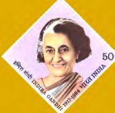
इंदिरा गांधी (1917 - 1984)
• उपाधि: भारत की पहली महिला प्रधानमंत्री (1966-1977 और 1980-1984)।
• साहसिक कदम: 1969 में 14 निजी बैंकों का राष्ट्रीयकरण, प्रिवी पर्स की समाप्ति, और 1971 के युद्ध में ऐतिहासिक जीत दिलाकर बांग्लादेश का निर्माण कराया।
• नारा: "गरीबी हटाओ" के लोक-लुभावन नारे से देश के वंचितों के बीच अपनी अमिट पहचान बनाई।
• विवाद: 1975 में देश में **आपातकाल (Emergency)** लागू किया, जिसके कारण इनकी काफी आलोचना हुई। 1984 में इनके अंगरक्षकों द्वारा इनकी हत्या कर दी गई।
🎬 सिनेमाई संदर्भ (Film Box): ज़ंजीर (1973)
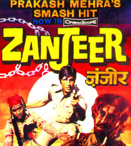
फिल्म का पृष्ठभूमि और संदर्भ: प्रकाश मेहरा द्वारा निर्देशित और सलीम-जावेद द्वारा लिखित फिल्म **'ज़ंजीर' (1973)** भारतीय सिनेमा इतिहास की एक युगांतकारी फिल्म है। इस फिल्म ने हिंदी सिनेमा में **'एंग्री यंग मैन' (Angry Young Man)** के रूप में अमिताभ बच्चन को स्थापित किया।
राजनैतिक एवं सामाजिक जुड़ाव: 1970 के दशक की शुरुआत में देश में भारी गरीबी, बेरोजगारी, और विकास की धीमी रफ्तार के कारण युवाओं में भारी हताशा और आक्रोश (angst) था। 'ज़ंजीर' का ईमानदार लेकिन गुस्सैल पुलिस इंस्पेक्टर (विजय) व्यवस्था के भ्रष्टाचार और कानून की लाचारी के खिलाफ निजी जंग लड़ता है। यह फिल्म उस दौर के राजनैतिक मोहभंग, प्रशासनिक भ्रष्टाचार और नागरिक असंतोष का जीवंत प्रतीक है, जिसने आगे चलकर आपातकाल (Emergency) की पृष्ठभूमि तैयार की।
• प्रश्न: एनसीईआरटी पुस्तक में फिल्म 'ज़ंजीर' (1973) का उल्लेख किस संदर्भ में किया गया है?
• उत्तर: 'ज़ंजीर' का उल्लेख 1970 के दशक के **राजनैतिक मोहभंग (Political Disillusionment)** और सामाजिक-आर्थिक संकट को दर्शाने के लिए किया गया है। यह फिल्म दिखाती है कि कैसे व्यवस्था की कमियों और भ्रष्टाचार ने युवाओं में तीव्र आक्रोश पैदा किया, जो तत्कालीन कांग्रेस सरकार की लोक-लुभावन नीतियों और वास्तविक परिस्थितियों के बीच के अंतर को उजागर करता है।
अध्याय 12: मेगा प्रश्न बैंक (Board Exam Special)
खंड A: अति-लघु उत्तरीय प्रश्न (1 अंक)
- Q1: 'सिंडिकेट' से आप क्या समझते हैं?
Ans: कांग्रेस के भीतर शक्तिशाली, पुराने और प्रभावशाली नेताओं का एक अनौपचारिक समूह जिसका नेतृत्व के. कामराज कर रहे थे। - Q2: 1967 के चुनावों में 'गैर-कांग्रेसवाद' का नारा देने वाले समाजवादी नेता कौन थे?
Ans: डॉ. राम मनोहर लोहिया। - Q3: प्रिवी पर्स की समाप्ति किस प्रधानमंत्री के कार्यकाल में और किस वर्ष हुई थी?
Ans: इंदिरा गांधी के कार्यकाल में, 1971 में (26वें संविधान संशोधन द्वारा)। - Q4: 1969 के ऐतिहासिक कांग्रेस विभाजन के समय किस राष्ट्रपति उम्मीदवार की जीत हुई थी?
Ans: स्वतंत्र उम्मीदवार वी. वी. गिरि की। - Q5: दलबदल की राजनीति को दर्शाने वाला प्रसिद्ध जुमला कौन सा है?
Ans: "आया राम, गया राम" (हरियाणा के विधायक गया लाल की घटना पर आधारित)।
खंड B: लघु उत्तरीय प्रश्न (4 अंक)
- Q1: 1967 के चुनावों को 'राजनैतिक भूकंप' क्यों कहा जाता है? चार कारण स्पष्ट करें।
Ans: (1) कांग्रेस को लोकसभा चुनाव में स्वतंत्रता के बाद सबसे कम सीटें मिलीं। (2) कांग्रेस देश के 9 राज्यों (जैसे यूपी, बिहार, पश्चिम बंगाल, मद्रास आदि) में अपनी बहुमत खो बैठी। (3) कांग्रेस के कई राष्ट्रीय स्तर के दिग्गज नेता (जैसे कामराज, एस.के. पाटिल) चुनाव हार गए। (4) पहली बार राज्यों में 'संयुक्त विधायक दल' (SVD) की गठबंधन सरकारों का जन्म हुआ। - Q2: 1969 में कांग्रेस के विभाजन के पीछे कौन से नीतिगत और व्यक्तिगत मतभेद थे?
Ans: (1) व्यक्तिगत सत्ता संघर्ष: इंदिरा गांधी संगठन के पुराने नेताओं (सिंडिकेट) के प्रभाव से मुक्त होना चाहती थीं। (2) राष्ट्रपति चुनाव विवाद: इंदिरा गांधी ने सिंडिकेट के उम्मीदवार संजीव रेड्डी के खिलाफ स्वतंत्र उम्मीदवार वी. वी. गिरि का समर्थन किया। (3) नीतिगत मतभेद: इंदिरा गांधी द्वारा बैंकों का राष्ट्रीयकरण और प्रिवी पर्स समाप्ति जैसे समाजवादी फैसले लेना, जिसका सिंडिकेट विरोधी था।
खंड C: दीर्घ उत्तरीय प्रश्न (6 अंक) [V.V. IMP]
Q: इंदिरा गांधी ने 1971 के चुनावों में भारी जीत कैसे हासिल की? मुख्य कारकों की विस्तृत चर्चा करें।
उत्तर: इंदिरा गांधी की जीत के छह मुख्य कारक निम्नलिखित थे:
1. 'गरीबी हटाओ' का नारा: इस सकारात्मक नारे ने देश के निर्धन और वंचित वर्गों (महिलाएं, दलित, भूमिहीन) को भावनात्मक रूप से जोड़ा, जबकि विपक्ष का नारा केवल नकारात्मक "इंदिरा हटाओ" था।
2. समाजवादी नीतियां: 1969 में 14 बैंकों का राष्ट्रीयकरण और प्रिवी पर्स की समाप्ति ने इंदिरा को 'सामंतवाद विरोधी' और 'गरीबों का मसीहा' साबित किया।
3. कम्युनिस्टों (CPI) का समर्थन: वामपंथी दलों के रणनीतिक गठबंधन से कांग्रेस-विरोधी मतों का बंटवारा रुक गया।
4. विपक्ष (ग्रैंड अलायंस) की कमजोरी: विपक्ष के पास कोई वैकल्पिक एजेंडा या राष्ट्रीय नेता नहीं था, वे केवल कांग्रेस विरोध पर टिके थे।
5. 1971 का भारत-पाक युद्ध: युद्ध में ऐतिहासिक जीत और बांग्लादेश के निर्माण से इंदिरा गांधी की छवि एक सशक्त और पराक्रमी वैश्विक नेता के रूप में निखर कर आई।
6. करिश्माई व्यक्तित्व: देश की जनता ने इंदिरा के साहसिक फैसलों और उनकी अटूट इच्छाशक्ति में विश्वास जताया।
अध्याय 12 का 'गुरुमंत्र' (Quick Box Summary)
- 1. शास्त्रीजी का काल चुनौतियों से भरा था ('जय जवान जय किसान')।
- 2. 1967 का चुनाव भारतीय राजनीति का पहला बड़ा झटका ('राजनैतिक भूकंप') था।
- 3. दलबदल ('आया राम गया राम') ने अस्थिरता को जन्म दिया।
- 4. 1969 का विभाजन कांग्रेस के सांगठनिक ढांचे के कमजोर होने की शुरुआत थी।
- 5. इंदिरा गांधी ने समाजवादी रुख अपनाकर अपनी स्थिति मजबूत की।
- 6. 1971 की जीत ने कांग्रेस के प्रभुत्व को फिर से स्थापित किया।
- 7. 'Restoration' का अर्थ था—पुरानी लोकतांत्रिक छतरी की जगह एक केंद्रीकृत राजनैतिक दल का उदय।